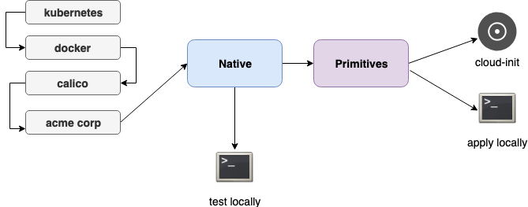

konfigadm
konfigadm is a node instance configuration tool focused on bootstrapping nodes for container based environments
Usage
1 2 3 4 5 6 7 8 9 10 11 12 13 14 15 16 17 18 | Usage: konfigadm [command] Available Commands: apply Apply the configuration to the local machine cloud-init Exports the configuration in cloud-init format help Help about any command minify Resolve all lookups and dependencies and export a single config file verify Verify that the configuration has been applied correctly and is in a healthy state version Print the version of konfigadm Flags: -c, --config strings Config files in YAML or JSON format -d, --detect Detect tags to use -h, --help help for konfigadm -v, --loglevel count Increase logging level -t, --tag strings Runtime tags to use, valid tags: debian,ubuntu,redhat,rhel,centos,aws,vmware -e, --var strings Extra Variables to in key=value format |
Design
